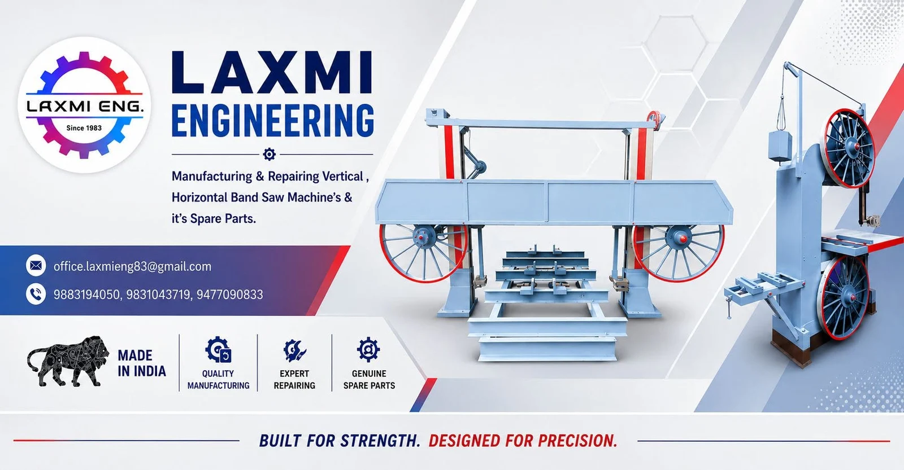
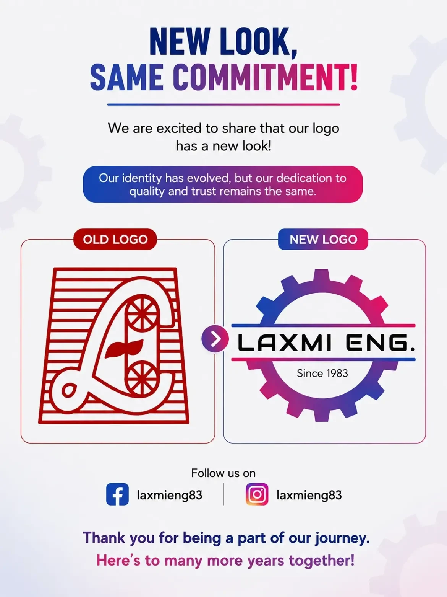

About Us
Deep roots.
Worldwide ambition.
M/s. Laxmi Engineering is a globally recognized pioneer in manufacturing Heavy-Duty Horizontal and Vertical Band Saw Machines. Headquartered in West Bengal, India, we have spent over four decades engineering high-precision machinery, custom spare parts and dependable maintenance services for heavy industries worldwide.

The Laxmi Engineering Advantage
Deep technical knowledge and proven engineering reliability.
Heavy-duty Horizontal and Vertical Bandsaw machines.
Genuine spare parts and expert servicing.
High-standard machinery exported worldwide.
Global export footprint
A name built on commitment.
Office & Manufacturing Unit
Par Dankuni More, P.O: Dankuni Coal Complex, District: Hooghly, Pin: 712310, West Bengal, India.

Our identity has evolved. Our commitment to quality and trust continues.
Your next step starts with a conversation.
Machinery, genuine parts or service support — we’re here to help.